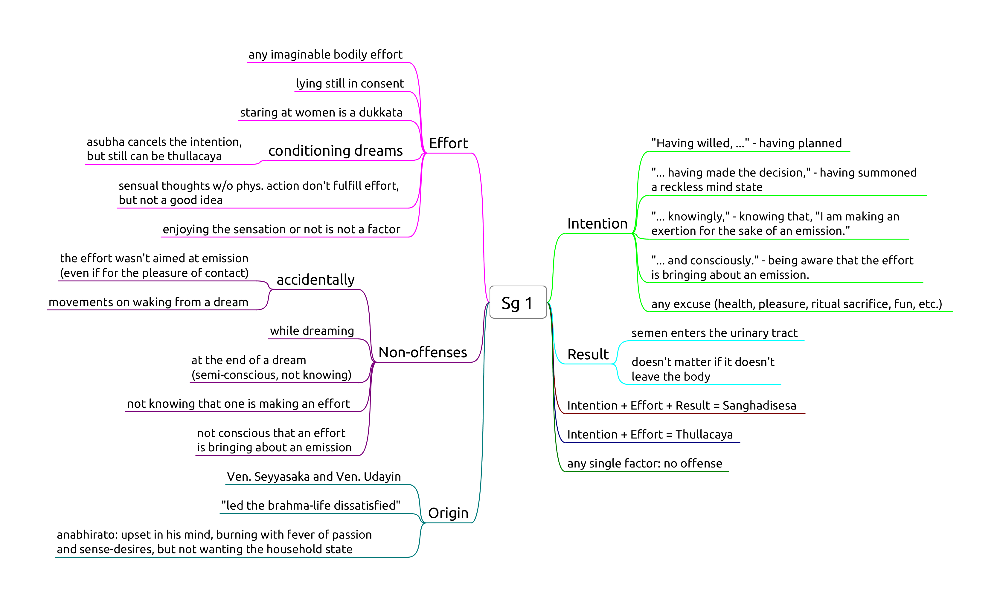
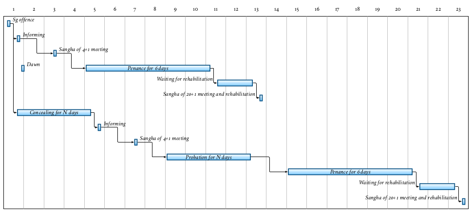

Sexual Conduct
- Pr 1, Sexual intercourse
- Sg 1, Intentional emission of semen
Pr 1, Sexual intercourse

- "... For that action you would only suffer death, for this action you will suffer in hell.
- As a man with his head cut off cannot become one to live again.
- As a withered leaf separated from its stem cannot be joined again.
- As a flat stone that has been broken in half cannot be put together again.
- As a palmyra tree cut off at the crown is incapable of further growth."
Sg 1, Intentional emission of semen

- "with the same hand you use to eat the gifts of the faithful"
- trust and good will of the supporters, social contract
Result is fulfiled when the semen enters the urinary tract, since at that point the process is irreversible, even when semen was not emitted, being blocked in some way.
Probation and Penance

(Figure: Overview of the procedure after a Sanghadisesa offence, comparing the case of immediately informing and concealing.)
One doesn't have to wait until one is certain about the offence, speaking to another bhikkhu about a doubtful situation will at least clear one's conscience that one is not concealing it.
A bhikkhu who comitted a sanghadisesa must inform another bhikkhu as soon as possible, but at most until the next dawnrise. The Sangha must meet and at his request, allow a six-dawn period of penance (mānatta). If he concealed the offence, a probation period (parivāsa) is required beforehand.
The Sangha will determine when and where the bhikkhu should observe the parivāsa and mānatta. These periods are determined by the Sangha and don't have to occur back-to-back.
After completing mānatta he can only be rehabilitated as a bhikkhu in regular standing by a community meeting of at least 20 bhikkhus. He is not required to stay at that particular monaster after having received rehabilitation.
If he commits another sanghadisesa before rehabilitation, he must inform a bhikkhu and ask a Sangha of at least four to 'send him back to the beginning.'
There is allowance to interrupt and set aside the penance or probation for a period of time, for example when many visiting monks are expected to arrive at the monastery for an event.
Characteristic duties during penance:
- not receiving duties of respect from other bhikkhus
- inform visiting bhikkhus that he is undergoing penance
- every day, notify every bhikkhu in the monastery of his offence
- stay under a separate roof than the other bhikkhus
- only leave the monastery when accompanied by four other bhikkhus
The duties during probation are the same as during penance, except:
- inform the Sangha of his offence every fortnight, not every day
- only leave the monastery when accompanied by a single other bhikkhu
Sensual thoughts
Sensual thoughts are not designated a penalty, but they grow quickly and lead to one's downfall.
The thought occurred to the deva living in the sala tree ... "It's pleasant, the touch of this maluva creeper's soft, tender, downy tendril." (MN 45)
When reconizing that one has been caught up in a sensual fantasy, immediately visualizing asubha of the body can break up the lustful mental state.
Repeatedly training to notice the signs of asubha changes the unconscious habits of the dreaming mind as well.
Monks, if a sensual thought, a thought of ill-will, or a thought of harming arises in a monk while walking, standing, sitting or lying down, and he tolerates it, does not abandon it, dispel it, terminate it, and obliterate it, then that monk is said to be devoid of ardour and wise fear of consequences; he is constantly and continuously lazy and lacking in energy while walking, standing, sitting or lying down. (AN 4.11)